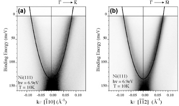

単体金属における表面電子状態
光電子スペクトルは電子状態を記述する上で基本的な一粒子スペクトル関数と対応づけられる。一粒子スペクトル関数には多体効果を反映する自己エネルギーが含まれ、光電子スペクトルを詳細に解析することで電子が受ける相互作用の知見を得ることができる [1]。固体内部では、結晶の周期性から電子はブロッホ状態となり、ブリルアンゾーンの境界や混成によって伝導帯と価電子帯にエネルギーギャップが生じる。しかし、結晶表面（界面）では原子配列の周期性が途切れるため、新たな境界条件のもとでシュレディンガー方程式が解かれエネルギー準位が形成される。このような周期性の破れに起因してバルクバンドのギャップ中に存在するエネルギー準位を Shockley 表面準位という。
典型的な強磁性体であるニッケル Ni 原子の (111) 面では、Γ bar 点を中心として Shockley 表面準位が形成され、バルクの強磁性状態を反映してスピン偏極していると予想されている [2]。また、Ni は Shockley 表面準位が存在するフェルミ準位までバルクの d バンドが存在するため、表面準位もその影響を受け電子−電子相互作用が大きくなると期待される。
光物性研究室では、広島大学放射光科学研究センター (HiSOR) BL-1 及び BL-9A で得られる高輝度放射光を用いて、高分解能角度分解光電子分光実験を行った。

Ni (111) 面の Shockley 表面準位
Ni (111) 面の Shockley 表面準位
Ni (111) 表面に下に凸の明瞭な表面準位が観測され、他の貴金属の Shockley 準位と同様な電子面であることが明らかとなった。また、フェルミ波数の決定から、フェルミ面はΓ点を中心に等方的な円形であることがわかった。自己エネルギーの解析では、自由電子バンドに比べて Ni (111) 面の表面準位は強い電子−電子相互作用を受けていることが明らかになった。
M. Higashiguchi et al., Surface Science 601, 4005 (2007)
参考文献
[1] S. Hufner, "Photoelectron Spectroscopy" Springer-Verlag, Berlin, 2003
[2] N. Memel et al., Phys. Rev. B 55, 5634 (1997)